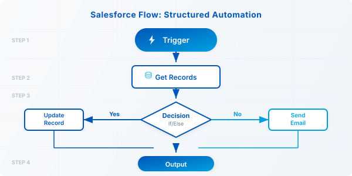
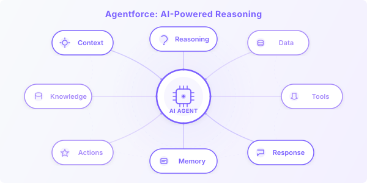

If you've been following the Salesforce ecosystem lately, you've no doubt heard a lot about Agentforce — Salesforce's AI-powered agent platform. And if you're like most admins or consultants, your first question is probably: do I still need Flow, or does Agentforce replace it?
The short answer: both tools have a place, and knowing when to use each one is quickly becoming a core skill for Salesforce professionals. In this post, we'll break down the key differences, when each tool shines, and how they can work together — with real-world Certinia PSA examples throughout.
A Quick Refresher: What Each Tool Does
Salesforce Flow has been the go-to automation tool for years. It's declarative, visual, and handles everything from record updates to approval processes to sending emails. If something happens on a record and you need a predictable response — Flow is your friend.
Agentforce is different in nature. Instead of following a fixed script, an Agentforce agent reasons about a situation and decides what action to take based on context, instructions, and the tools available to it. Think of it less like a conveyor belt and more like a knowledgeable colleague who can figure things out.
The Core Difference: Rules vs. Reasoning
Here's the simplest way to think about it:
Flow
"When X happens, always do Y."
Agentforce
"Here's a situation — what should happen here?"
Flow is deterministic. You define every branch, every condition, every outcome. It's reliable, auditable, and easy to maintain for well-defined processes.
Agentforce is probabilistic and contextual. It uses a large language model to interpret situations, choose from a set of available actions, and respond in a way that makes sense given the circumstances. It handles ambiguity — something Flow was never designed for.
Side-by-Side Comparison
| Criteria | Salesforce Flow | Agentforce Agent |
|---|---|---|
| Trigger | Record change, schedule, platform event | User intent, natural language input |
| Logic style | If/then rules, structured branches | Reasoning, context-aware decisions |
| Maintenance | Admin-friendly, visual builder | Prompt + action tuning, more iterative |
| Best for | Predictable, repeatable processes | Judgment-based, variable workflows |
| Setup complexity | Low to medium | Medium to high (initial config) |
| Certinia use case | Auto-update project status on milestone | Answer questions about project health |
When Flow Is the Right Choice

Flow still wins in most structured, high-volume automation scenarios. Use it when:
- The process is well-defined with clear triggers and outcomes
- You need guaranteed, auditable execution (approvals, compliance steps)
- The logic doesn't require interpreting language or context
- You're automating something that runs hundreds of times a day
When Agentforce Is the Right Choice

Agentforce earns its place when the task involves judgment, natural language, or variability. Use it when:
- Users need to ask questions and get intelligent, context-aware answers
- The process involves multiple variables that change depending on the situation
- You want to reduce back-and-forth by letting users interact naturally
- The task requires pulling together information from multiple sources
Using Both Together
Here's what many teams are discovering: the best outcomes come from combining both tools. Agentforce handles the intake and reasoning layer, while Flow handles the execution.
This pattern — AI reasoning on top of structured automation — is where the Salesforce platform is clearly heading, and it's worth getting familiar with now.
Bottom Line
Agentforce is not here to replace Flow. It's here to handle the layer of work that Flow was never equipped for: language, judgment, and adaptability.
If you're a Salesforce admin or consultant, the skill set that will matter most over the next few years isn't choosing between these tools — it's knowing how to deploy them together strategically.
Have questions about implementing Agentforce in a Certinia PSA environment?
Reach Out — It's What We Do